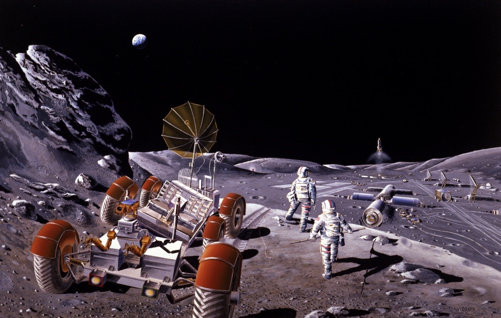

First crewed moon base
In the 2020s we witnessed the birth of commercial lunar transport services through programs such NASA's Commercial Lunar Payload Services (CLPS) and Artemis. Reductions in launch cost allowed these lunar landers to offer entrepreneurs more economical access to lunar orbit and the surface of the moon as “ride shares.” As infrastructure, like a lunar communication network and surface power, became available, those wanting to do business on the lunar surface found it even more affordable to do so (they didn’t have to bring their own power and comm with them). Prospecting confirms the presence of valuable lunar resources and space tourism is growing from “standard” orbital station vacations to exotic lunar exploits. Opportunities like these drive demand for human-tended operations. Large capacity Earth-orbiting fuel depots and frequent Earth-lunar shuttle services help enable this possibility.
Image courtesy of NASA